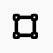

Local Energy Communities Assessment Tool
Abstract
The Local Energy Communities (LEC) Assessment Tool is designed to help users identify optimal locations for establishing Local Energy Communities. By analyzing various datasets, including energy consumption, cadastral data, and infrastructure information, the tool provides insights into areas where LECs can be successfully implemented.
Using machine learning techniques, the tool processes complex data to evaluate building potential, focusing on solar energy capabilities. Users can interact with a map-based interface, filter buildings, generate reports, and obtain detailed building and cadastral information. The tool aims to facilitate the development of LECs, supporting energy decarbonization and the transition to sustainable energy systems.
Introduction
A Local Energy Community (LEC) is a legal entity where various actors collaborate to meet their energy needs through shared production, transmission, and consumption. LECs play a pivotal role in the transition toward decarbonizing buildings, promoting social interaction, and integrating renewable energy sources. However, one of the main challenges in establishing a successful LEC is identifying the geographic areas where these communities can thrive. This is where the tool comes into play.
The tool is designed to solve the complex problem of determining suitable areas for LECs by analyzing diverse datasets, such as energy consumption, cadastral information, and infrastructure details. Using machine learning techniques, it processes this information to provide actionable insights that help users define areas where LECs can be effectively implemented.
By enabling the creation of LECs, the tool contributes to a more sustainable energy ecosystem, supporting decarbonization efforts and the wider adoption of renewable energy. It helps streamline energy management, making energy production and consumption more efficient within communities. Users who invest time in learning and using this tool gain the ability to identify optimal locations for LECs, contributing to environmental sustainability and community engagement, while simplifying a typically complex and data-intensive process.
The tool is currently accessible at the following URL: https://lec.staging.moderate.cloud/
User Guide
The main view of the web app shows a map of a country, currently Spain, with all its municipalities. The user can select any municipality to center the screen for close examination. However, only those municipalities with a blue background contain building data.

Currently, only the municipality of Crevillent contains building data.
When focused on a municipality that contains data, the bottom of the screen displays a table with the first 10 buildings ranked by solar potential radiation. This is the default sorting criterion, but the user can change it in two ways, which will be explained in the next sections.

The main functionalities of the tool are:
- Viewing building data in a table format and manipulating its sorting criteria.
- Viewing building data on a map, with colors representing potential solar radiation. This also provides access to cadastral information.
- Filtering buildings by drawing a polygon box on the map.
- Saving or printing a document containing the current state of both the table data and the map view.
- Generating a personalized report that provides an overview of the municipality and a detailed analysis of the selected buildings.
In the following sections, we describe in detail how the user can achieve these actions.
The Map View
As mentioned before, the user can select any municipality on the map. If the selected municipality contains building data, the interface will show additional buttons and gradient colors, as shown in the image below.

The user can click on a row in the table to center the view on a specific building, or navigate the map and click on it directly. The selected building will display a diagonal hatch pattern to indicate its location, and a popover on the right side will provide detailed building information and a button to redirect the user to the building's page within the official cadastral website.

Additionally, if the user zooms in enough, the centroids of the buildings will appear. This activates the comparison mode, where the user can hover over any building to see its information.
The following image illustrates these functionalities:

Changing Sorting Criteria
As mentioned before, the default sorting is by solar potential radiation. The user can change the order of the table by clicking on the column headers. For more complex sorting, the user can click the "Sorting criteria" box to unfold the advanced sorting options.
As shown in the image below, the default sorting criterion is 'Total Production.' However, within this panel, users can select any relevant variable, drag it to the desired position, and reorder them. The position of each variable indicates its importance, with higher positions representing greater significance. Each variable is assigned a weight, and the buildings are sorted based on the weighted sum of these variables.
After the sorting criteria are defined, the user can click the button to apply the new sorting to the table below.
Filtering Buildings by area
One of the key features of the tool is the filtering of buildings. From all the available buildings, the user can select a subset by using the draw mode.
To change the tool’s mode, the user can click on the  button, located on the left side of the screen.
With this mode selected, the pointer changes to a blue dot, and some view functionalities will be disabled. The user can then click to add several points to form a desired polygon. When the user clicks on the first point again, or double-clicks, the polygon will close, and the tool will filter and display only the buildings inside the polygon.
Consequently, the table will also display only the buildings within the polygon, ensuring consistency between both views.

To exit the drawing mode, the user can click the draw button again. A button at the bottom of the map allows the user to reset the filter and display all buildings again.
Filtering Buildings by type
Users can filter buildings by type using the dropdown menu located beneath the drawing mode button. This menu allows the selection of one or more building types, such as residential, commercial, industrial, and more. The selected types will be highlighted in the dropdown menu.
Both filtering options will affect the table, map, and report generation, ensuring that users can focus on specific building characteristics.
Report Generation
The tool allows users to generate a report detailing the characteristics of the buildings, along with additional data and a brief analysis of the selected municipality and the filtered buildings.
To generate the report and save it to their computer, users can click the "Generate report" button in the top-right corner of the screen. The report will be generated and automatically downloaded within a few seconds.
About the report generation
This feature is still in its early stages, so the generated report may not be fully complete.
Saving or Printing the Current View
The tool allows users to save or print the current view, which includes both the table and the map. This is useful for sharing information or keeping a record of the analysis.
To save or print the current view, users can click the "Print" button next to the report button. This will generate a document that includes both the table and map views in their current state.
References
-
Access to the tool: https://lec.staging.moderate.cloud/
-
Spanish cadastre website: https://www.sedecatastro.gob.es